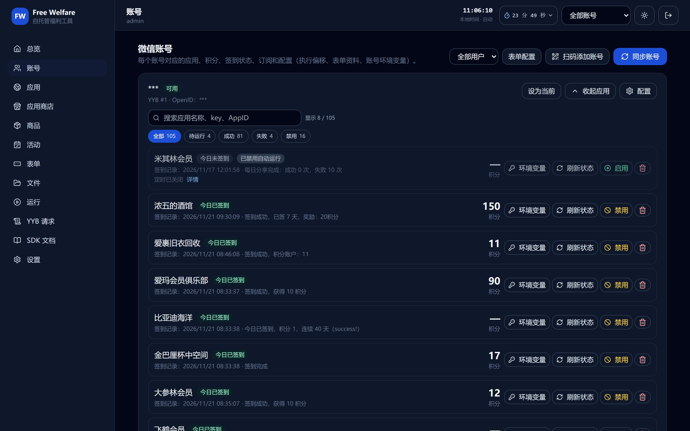

01
多账号与表单
一个微信账号管理多个应用；手机号、生日等表单资料按账号保存，环境变量可以引用表单字段。
功能
不是又一个脚本集合，而是一套能长期运行的账号、任务和日志面板。
一个微信账号管理多个应用；手机号、生日等表单资料按账号保存，环境变量可以引用表单字段。
从脚本源订阅应用和脚本，安装、更新、回滚都有版本记录；官方脚本源已内置 104 个应用。
每个脚本独立 cron，全局并发、单账号、单应用并发限制；队列和运行状态实时刷新。
同步 YYB 微信账号、扫码添加、自动取码和手机号授权；所有 YYB 请求可查询成功率和耗时。
SSE 推送运行状态和日志，任务结束立即更新；支持运行详情、错误码、重跑和完整历史。
PostgreSQL、脚本和缓存全部保存在本机；Docker、Windows 安装包、macOS/Linux 和 NAS 都能部署，不依赖第三方托管。
截图
截图中的账号名称、ID 和手机号已做脱敏处理。




下载与安装
Windows 用安装包，NAS / 服务器用 Docker。先准备 YYB，再启动 Free Welfare； 不必把所有方式都看一遍。
平台不内置 YYB。Docker 部署时，Free Welfare 与 YYB 必须使用同一个网络。
两边使用同一个网络名。默认是 yyb-go；YYB 默认 Compose 网络通常是 qinglong_default。
docker network inspect yyb-go >/dev/null 2>&1 || docker network create yyb-go
# YYB 的 .env
YYB_DOCKER_NETWORK=yyb-go
# Free Welfare 的 .env
YYB_DOCKER_NETWORK=yyb-go
YYB_BASE_URL=http://yyb-go:8000如果 YYB 已用默认 Compose 启动，把两边的 YYB_DOCKER_NETWORK 都改成 qinglong_default。
不装 Docker、不装 Node；双击安装，首次启动自动准备 PostgreSQL。
Free-Welfare-Setup-0.1.0.exe。http://localhost:3000，创建管理员。安装包未签名，SmartScreen 提示时选择“仍要运行”。覆盖安装会保留 .env 和 data/；卸载时删除安装目录和快捷方式。
3fba3f50f600f92bb8114feb6f109d59df6cfc4c22a8918fbd119873bd28ea81
使用预构建镜像，不在 NAS 或服务器上编译。适合群晖、威联通、飞牛 fnOS、TrueNAS、Unraid、极空间、绿联、Portainer 和 Linux 服务器。
http://服务器IP:31888，创建管理员。mkdir -p free-welfare && cd free-welfare
curl -fsSLO https://raw.githubusercontent.com/haikuotianko/free-welfare/main/deploy/compose/install.sh
bash install.shNAS 提示权限不足时使用 sudo bash install.sh；YYB 已在默认网络时使用 YYB_DOCKER_NETWORK=qinglong_default bash install.sh。
这些 NAS 都可以使用 Docker Compose。图形界面入口：
没有图形界面时直接运行上面的 install.sh；也可以复制下面的 Compose 内容手动创建项目。
新建目录并保存为 docker-compose.yml，再准备同目录的 .env。可下载 .env.example 后修改。
services:
postgres:
image: postgres:16-alpine
restart: unless-stopped
environment:
POSTGRES_USER: ${POSTGRES_USER:-welfare}
POSTGRES_PASSWORD: ${POSTGRES_PASSWORD:-welfare}
POSTGRES_DB: ${POSTGRES_DB:-welfare}
volumes:
- fw-pgdata:/var/lib/postgresql/data
healthcheck:
test: ['CMD-SHELL', 'pg_isready -U ${POSTGRES_USER:-welfare} -d ${POSTGRES_DB:-welfare}']
interval: 5s
timeout: 5s
retries: 10
api:
image: ${FW_IMAGE:-ghcr.io/haikuotianko/free-welfare:latest}
restart: unless-stopped
env_file: .env
command: sh -c "node tools/migrate.mjs && node apps/api/dist/main.js"
ports:
- '${API_HOST_PORT:-31888}:3000'
volumes:
- fw-data:/data
networks:
- default
- yyb-go
depends_on:
postgres:
condition: service_healthy
healthcheck:
test: ['CMD-SHELL', 'node -e "fetch(\"http://127.0.0.1:3000/api/v1/health\").then(r=>process.exit(r.ok?0:1)).catch(()=>process.exit(1))"']
interval: 10s
timeout: 5s
retries: 10
worker:
image: ${FW_IMAGE:-ghcr.io/haikuotianko/free-welfare:latest}
restart: unless-stopped
env_file: .env
command: node apps/worker/dist/main.js
volumes:
- fw-data:/data
networks:
- default
- yyb-go
depends_on:
postgres:
condition: service_healthy
api:
condition: service_healthy
volumes:
fw-pgdata:
fw-data:
networks:
yyb-go:
external: true
name: ${YYB_DOCKER_NETWORK:-yyb-go}启动前创建网络：
docker network inspect yyb-go >/dev/null 2>&1 || docker network create yyb-go
docker compose -f docker-compose.yml up -d --no-build源码构建才需要根目录 Dockerfile；普通部署直接使用预构建镜像。
需要 Node.js 22+；首次运行会自动安装依赖和内置 PostgreSQL。
brew install node@22），下载源码 ZIP 并解压。deploy/macos/start.command；被 Gatekeeper 拦截时右键选择“打开”。http://localhost:3000。数据保存在项目 data/；停止时在终端按 Ctrl+C。升级前先备份 data/。
需要 Node.js 22+ 和 git。服务器更推荐上面的 Docker；已有 Node 时这条路径最轻。
http://服务器IP:3000。git clone https://github.com/haikuotianko/free-welfare.git
cd free-welfare
chmod +x deploy/linux/start.sh
./deploy/linux/start.sh项目内提供 deploy/linux/free-welfare.service；创建 freewelfare 用户、复制 service、执行 systemctl enable --now free-welfare 即可。
适合二次开发或自己管理 PostgreSQL。普通用户不需要看这个。
http://localhost:3000。git clone https://github.com/haikuotianko/free-welfare.git
cd free-welfare
npm ci
npm run npm:build
npm install --prefix deploy/native
npm start在 .env 设置 EMBEDDED_PG=false 和 DATABASE_URL，再执行 npm start。
技术栈